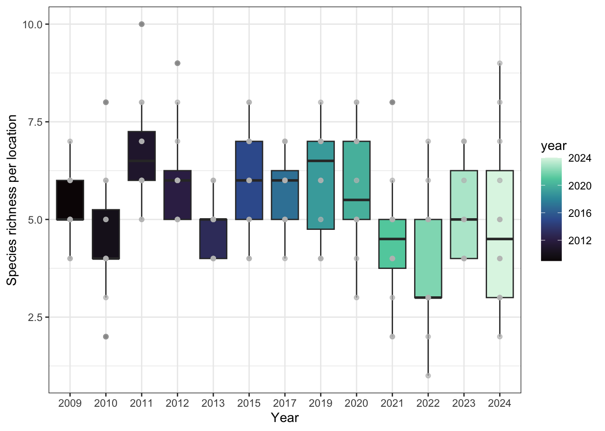
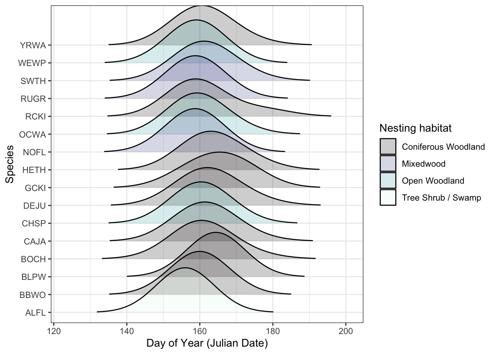

| Location | 2023 | Site | Treatment |
|---|---|---|---|
| AC-C2 | 1 | Alder Creek | Control |
| AC-T1 | 1 | Alder Creek | Prescribed Burn |
| AC-T2 | 1 | Alder Creek | Prescribed Burn |
| JR-C1 | 1 | Jarvis River | Control |
| JR-C2 | 1 | Jarvis River | Control |
| JR-T1 | 1 | Jarvis River | Prescribed Burn |
| JR-T2 | 1 | Jarvis River | Prescribed Burn |
| JR-T3 | 1 | Jarvis River | Prescribed Burn |
Report on the use of passive acoustic monitoring in Kluane National Park Reserve

Abstract
Passive acoustic monitoring has proven to be a valuable tool for studying vocalizing species. Environmental sensors are becoming increasingly easy to program and can autonomously generate extensive data sets of the soundscape, becoming an invaluable resource for ecological integrity monitoring. Kluane National Park Reserve deployed autonomous recording units (ARUs) across 10 locations, participating in the national Prescribed Burn protocol initiated in 2023. ARUs detected a total of 16 species including birds and mammals. Sustained monitoring of these areas following prescribed burns, incorporating enhanced protocols for equipment functionality, as well as broader scope in recording and data collection, will optimize the effectiveness of the ongoing monitoring program. Future data collection can be facilitated by more advanced models and analyses.
This is a dynamic report. Results may change as new or more data is added, or analyses conducted.
To run the report locally:
- Open RStudio or your preferred IDE
- Create a new project and set up for version control using the GitHub repository
- Pull from remote main
- Set your WildTrax username and password either through
Sys.setenvor using thekeyringpackage; authorize into WildTrax - Load the
.RDatafile in the first chunk - Render the document and review the results
Land Acknowledgement
In the spirit of Reconciliation, we respectfully acknowledge that the lands of Kluane National Park Reserve where this study took place are the traditional territories of the Southern Tutchone people represented in the Kluane region by the Champagne and Aishihik First Nations and the Kluane First Nation. Champagne and Aishihik First Nations, Kluane First Nation and Parks Canada are jointly responsible for the management of Kluane’s natural and cultural resources.
Introduction
Human activities have been identified as key pressures and contributors to the global decline in forest wildlife (Allan et al. (2017)). The repercussions of habitat fragmentation (Fahrig (2003)) and loss (Hanski (2011)), climate change (Mantyka-pringle, Martin, and Rhodes (2012), Sattar et al. (2021), Abrahms et al. (2023)), and increased access to sensitive areas exert direct and indirect pressures on forest biodiversity, particularly in managed regions in Canada (Lemieux et al. (2011)). In 2023, Kluane National Park Reserve initiated a program incorporating autonomous recording units (ARUs) for passive acoustic monitoring (PAM) of the Park’s wildlife. ARUs are compact environmental sensors that are designed to passively record the environment (Shonfield and Bayne (2017)), capturing vocalizing species like birds and amphibians, which is growing in use across the globe (Sugai et al. (2018)). This technology enables resource managers to conduct prolonged surveys with minimal human interference. The subsequent data collected by these units contribute valuable information to ecological integrity metrics such as species richness, diversity, occupancy, and trends over time. This data aids decision-making and management within the Park. Given the rapid and ease of accumulating large amounts of data from these units, maintaining a high standard of data integrity is paramount to ensure future data interoperability and sharing. WildTrax is an online platform developed by the Alberta Biodiversity Monitoring Institute (ABMI) for users of environmental sensors to help addresses these big data challenges by providing solutions to standardize, harmonize, and share data.
Allan, James R, Oscar Venter, Sean Maxwell, Bastian Bertzky, Kendall Jones, Yichuan Shi, and James EM Watson. 2017. “Recent Increases in Human Pressure and Forest Loss Threaten Many Natural World Heritage Sites.” Biological Conservation 206: 47–55.
Fahrig, Lenore. 2003. “Effects of Habitat Fragmentation on Biodiversity.” Annual Review of Ecology, Evolution, and Systematics 34 (1): 487–515.
Hanski, Ilkka. 2011. “Habitat Loss, the Dynamics of Biodiversity, and a Perspective on Conservation.” Ambio 40 (3): 248–55.
Mantyka-pringle, Chrystal S, Tara G Martin, and Jonathan R Rhodes. 2012. “Interactions Between Climate and Habitat Loss Effects on Biodiversity: A Systematic Review and Meta-Analysis.” Global Change Biology 18 (4): 1239–52.
Sattar, Q, ME Maqbool, R Ehsan, S Akhtar, Q Sattar, ME Maqbool, R Ehsan, and S Akhtar. 2021. “Review on Climate Change and Its Effect on Wildlife and Ecosystem.” Open J Environ Biol 6 (1): 008–14.
Abrahms, Briana, Neil H Carter, TJ Clark-Wolf, Kaitlyn M Gaynor, Erik Johansson, Alex McInturff, Anna C Nisi, Kasim Rafiq, and Leigh West. 2023. “Climate Change as a Global Amplifier of Human–Wildlife Conflict.” Nature Climate Change 13 (3): 224–34.
Lemieux, Christopher J, Thomas J Beechey, Daniel J Scott, and Paul A Gray. 2011. “The State of Climate Change Adaptation in Canada’s Protected Areas Sector.” The Canadian Geographer/Le Géographe Canadien 55 (3): 301–17.
Shonfield, Julia, and Erin M Bayne. 2017. “Autonomous Recording Units in Avian Ecological Research: Current Use and Future Applications.” Avian Conservation & Ecology 12 (1).
Sugai, Larissa Sayuri Moreira, Thiago Sanna Freire Silva, Jr Ribeiro José Wagner, and Diego Llusia. 2018. “Terrestrial Passive Acoustic Monitoring: Review and Perspectives.” BioScience 69 (1): 15–25. https://doi.org/10.1093/biosci/biy147.
The objectives of this report are to:
- Describe the data management and processing procedures for the acoustic data collected in 2023;
- Utilize traditional human tagging to detect and count species heard on recordings;
- Define straightforward methods for evaluating species presence, species richness, and species occupancy;
- Offer recommendations for ongoing monitoring approaches to contribute to the assessment of ecological integrity in forest ecosystems and prescribed burn management in the park;
- Facilitate data publication to the public, resource managers, academic institutions, and any other relevant agencies
Methods
Data collection and management
Data were collected during spring and summer of 2023. A total of 10 locations were surveyed, encompassing sites at Alder Creek (AC-) and Jarvis River (JR-), each with five locations. In each site, 3 locations were designated for a prescribed burn in 2024 (e.g. AC-T1), with 2 locations serving as unburned controls (e.g. JR-C1). Surveys were conducted on a rotational basis, as outlined in Table 1 (Table 1) and depicted in Figure 1 (Figure 2). ARUs were deployed at the onset of the breeding bird season (May-June) and rotated among locations until retrieval in July-August. Each ARU recorded for an average of 6.27 +/- 5.66 days. Recording schedules were standardized, comprising morning sessions at 05:30, 06:30, and 07:30, and evening sessions at 22:45 and 23:45. Evening recordings targeted species such as Varied Thrush, Common Nighthawks, and owls. Station installations remained constant throughout the monitoring period, with Alder Creek stations established in late May and Jarvis River in June.
A total of 191 recordings were collected (see Figure 3). Data were transferred via SD cards to the University of Alberta in Edmonton, where they are redundantly stored on a server known as Cirrus. The recordings were standardized to ensure adherence to the naming convention of LOCATION_DATETIME, such as AC-T1_20230625_053500.wav. All recordings designated for processing were directly uploaded to WildTrax and can be downloaded from the platform’s Recording tab, accessible under Manage > Download list of recordings (see Figure 1).


Community data processing
The principal goal for data processing was to describe the acoustic community of species heard at locations while choosing a large enough subset of recordings for analyses. To ensure balanced replication, for each location surveyed, four randomly selected recordings were processed for 3-minutes during the morning hours of 5:00 AM - 7:59 AM ideally on four separate dates (see Table 4). Four recordings will ensure that we have the minimum number of samples for a simple occupancy analysis (Darryl I. MacKenzie et al. (2002) and Darryl I. MacKenzie et al. (2003)). Tags are made using count-removal (see Farnsworth et al. (2002), Sólymos et al. (2018)) where tags are only made at the time of first detection of each individual heard on the recordings. In case a species was overly abundant a TMTT (‘too many to tag’) flag was used (see Table 3). 4% of the total tags were TMTT but were subsequently converted to numeric using wildRtrax::wt_replace_tmtt. We also verified that all tags that were created were checked by a second observer (n = 98.64%) to ensure accuracy of detections (see Table 2). Amphibian abundance was estimated at the time of first detection using the North American Amphibian Monitoring Program with abundance of species being estimated on the scale of “calling intensity index” (CI) of 1 - 3. Vocalizing mammals such as Red Squirrel, were also noted on the recordings. After the data are processed in WildTrax, the wildRtrax package is use to download the data into a standard format prepared for analysis. The wt_download_report function downloads the data directly to a R framework for easy manipulation (see wildRtrax APIs).
MacKenzie, Darryl I, James D Nichols, Gideon B Lachman, Sam Droege, J Andrew Royle, and Catherine A Langtimm. 2002. “Estimating Site Occupancy Rates When Detection Probabilities Are Less Than One.” Ecology 83 (8): 2248–55.
MacKenzie, Darryl I., James D. Nichols, James E. Hines, Melinda G. Knutson, and Alan B. Franklin. 2003. “ESTIMATING SITE OCCUPANCY, COLONIZATION, AND LOCAL EXTINCTION WHEN a SPECIES IS DETECTED IMPERFECTLY.” Ecology 84 (8): 2200–2207. https://doi.org/https://doi.org/10.1890/02-3090.
Farnsworth, George L, Kenneth H Pollock, James D Nichols, Theodore R Simons, James E Hines, and John R Sauer. 2002. “A Removal Model for Estimating Detection Probabilities from Point-Count Surveys.” The Auk 119 (2): 414–25.
Sólymos, Péter, Steven M. Matsuoka, Steven G. Cumming, Diana Stralberg, Patricia Fontaine, Fiona K. A. Schmiegelow, Samantha J. Song, and Erin M. Bayne. 2018. “Evaluating time-removal models for estimating availability of boreal birds during point count surveys: Sample size requirements and model complexity.” The Condor 120 (4): 765–86. https://doi.org/10.1650/CONDOR-18-32.1.
| Tag is verified | Count | Proportion |
|---|---|---|
| 2 | 1.36 | |
| t | 145 | 98.64 |
| location | recording_date_time | species_code | individual_count |
|---|---|---|---|
| AC-C2 | 2023-06-06 06:30:00 | WWCR | TMTT |
| AC-T1 | 2023-06-21 07:30:00 | WWCR | TMTT |
| AC-T2 | 2023-05-27 07:30:00 | WWCR | TMTT |
| AC-T2 | 2023-06-01 05:30:00 | WWCR | TMTT |
| JR-T1 | 2023-06-21 06:30:00 | WWCR | TMTT |
| JR-T3 | 2023-06-06 07:30:00 | WWCR | TMTT |
| location | year | task_duration | typ | n |
|---|---|---|---|---|
| AC-C2 | 2023 | 300s | Dawn | 4 |
| AC-T1 | 2023 | 300s | Dawn | 4 |
| AC-T2 | 2023 | 300s | Dawn | 4 |
| JR-C1 | 2023 | 300s | Dawn | 4 |
| JR-C2 | 2023 | 300s | Dawn | 4 |
| JR-T1 | 2023 | 300s | Dawn | 4 |
| JR-T2 | 2023 | 300s | Dawn | 4 |
| JR-T3 | 2023 | 300s | Dawn | 4 |
Results
Three locations (AC-C1, AC-T3, JR-BAT) failed and did not complete their intended recording schedule.
A total of 16 species were found. Figure 4 describes the relationship of species richness across each location and survey year with Figure 5 showing the relationship between species richness and survey effort.


| species_code | species_common_name |
|---|---|
| BOCH | Boreal Chickadee |
| CAJA | Canada Jay |
| CHSP | Chipping Sparrow |
| CORE | Common Redpoll |
| DEJU | Dark-eyed Junco |
| GCKI | Golden-crowned Kinglet |
| HETH | Hermit Thrush |
| LEYE | Lesser Yellowlegs |
| NONE | NONE |
| PIGR | Pine Grosbeak |
| PISI | Pine Siskin |
| RESQ | Red Squirrel |
| SWTH | Swainson's Thrush |
| UNPA | Unidentified Passerine |
| UNTH | Unidentified Thrush |
| VATH | Varied Thrush |
| WIWA | Wilson's Warbler |
| WWCR | White-winged Crossbill |
| YRWA | Yellow-rumped Warbler |

Discussion
Due to the deterioration of forest health in these areas,
While this project has yielded promising results, there are several operational improvements necessary to fully realize its potential moving into next season. Some key recommendations include:
Extending survey window and recording schedule: Initiating the survey window to encompass resident and early-migrant species (early May) and extending it into the post-breeding season (mid-July) will capture a comprehensive range of species. Given the diverse migration timing and breeding patterns among species, extending the window can help to add additional species whose detectability is lower. Recording bird vocalizations throughout the deployment period at various times of the day–pre-dawn, dawn, post-dawn, pre-dusk, dusk, post-dusk, and night–enables a comprehensive assessment of bird diversity and activity patterns. Birds exhibit diverse diurnal and nocturnal behaviors, with some species being more vocal during specific times of the day or night. Continuous recording across different times allows ARUs to capture a broad spectrum of species, including those that are crepuscular or nocturnal, providing valuable insights into their behaviors and habitat preferences. This approach enhances the accuracy and completeness of bird surveys, offering valuable data for planning and management efforts.
Equipment maintenance and management: Given that 3 locations failed during their deployment, ensuring that equipment is properly functioning, tested and maintained prior to deployment is crucial for ensuring the success of a long-term monitoring program. The ABMI provides Equipment Protocols to help assist in the maintenance and deployment of most Wildlife Acoustics makes and models. Most importantly, ensure the units are cleaned and inspected for physical or mechanical damage, update the firmware and conduct tests to ensure functionality in a controlled environment.
Localized monitoring: Consistently deploying ARUs in the same locations on the landscape year after year will help to establish robust monitoring sites. By continuously surveying specific areas, changes in bird distribution and abundance can be monitored. This approach facilitates the identification of long-term trends and enables the understanding of changes in bird populations and guilds over time, especially with planned changes with the prescribed burns. Forest structure may be lost after a burn, however ARUs can be established in the same locations using different deployment methods (again see Equipment Protocols).
ARU deployment in prescribed burns: Deploying at least one ARU per 0.5 hectares burned ensures thorough monitoring of post-burn effects on bird populations. This density of ARU deployment generates detailed data on how bird populations respond to habitat changes following prescribed burns, facilitating the understanding of ecosystem resilience and recovery processes. By monitoring post-burn effects on bird populations, researchers can inform conservation strategies aimed at mitigating the impact of habitat disturbance.
Bat monitoring enhancements: Continuing to use a sample rate to 256 kHz is advisable, given that bat species in western Canada typically do not vocalize beyond this frequency range. The sampling rate will also optimize the total amount of data volume collected and battery usage. It is also recommended to programming the Max Time Between Calls (TBC) by adjusting the trigger window from 3 to 2 seconds. The North American Bat Monitoring Program offers many additional recommendations for deployment, processing and interpretation of ultrasonic data.